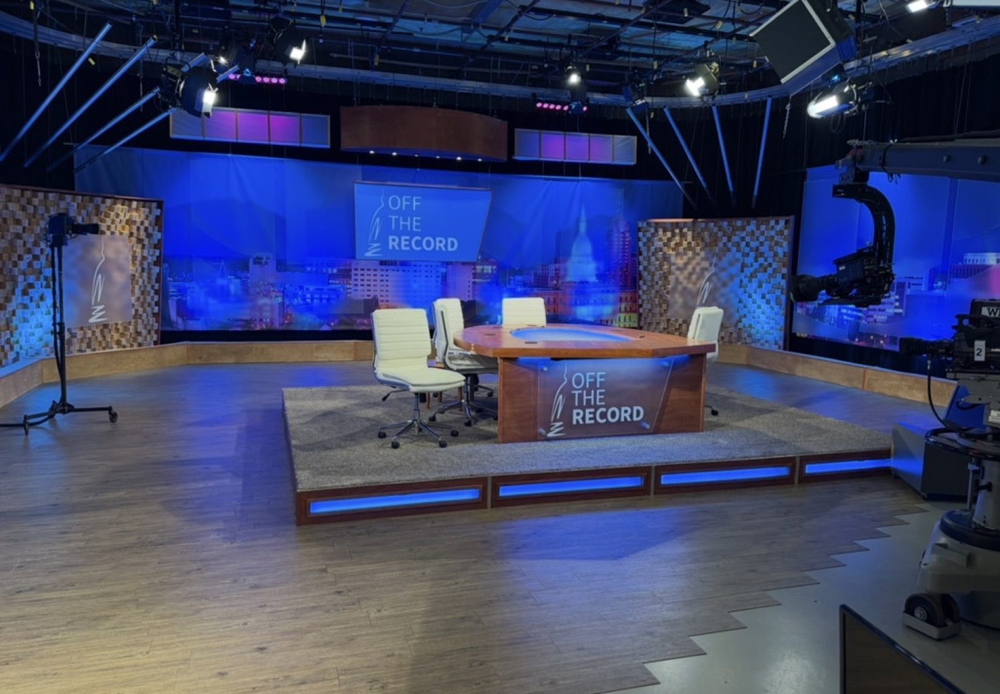

Multiplatform operation · Michigan State University
Strategy made operational.
I arrived in June 2025 to a strong newsroom with a digital front door that was not yet doing it justice. Since then I have set direction for two newsletters, a dedicated election destination, a digital-first audience strategy and a freelance reporter system that helped protect capacity after federal funding cuts. During that work, the digital audience roughly doubled.
Four case studies in turning editorial strategy into products and operating models a team can sustain.
Multiplatform operation
Michigan’s Capital Region and six mid-Michigan counties
Licensed to Michigan State University
News director · June 2025 to present
+101.6%
Daily-average active users on wkar.org. The digital audience roughly doubled.
8.1%
Click rate on The Signal across 30 editions, roughly 7× the media-publisher median.
3
Editorial products launched inside one year: The Signal, The Signal+ and Election 2026.

The work
Four case studies · 2025 to 2026
The Signal
Identified the audience opportunity, conceived the product, shaped its identity and editorial architecture, and led a four-week launch before systematizing production.
Newsletter · Product · Editorial systems

Election 2026
A dedicated election destination connecting local questions with statewide reporting, built around a clear strategy, content architecture and service promise.
Strategy · Content architecture · Service

Audience & Growth
During the digital transformation the audience roughly doubled and recent monthly users reached about three times NPR Studio’s typical-station benchmark. The floor moved, not just the peak.
Analytics · Benchmarks · Method
The Newsroom
A visible, talent-led operation built through hiring, coaching, clear ownership and a freelance reporter system that expanded coverage capacity.
Talent · Hiring · Freelance